The third food in the analysis is Sorghum. Which is a cereal grain and is the fifth most important cereal crop in the world, largely because of its natural drought tolerance and versatility as the food, feed, and fuel Whole Grain Council. For these reasons it is mostly grown in Africa and Australia. For this data set, we mostly see it in Africa.
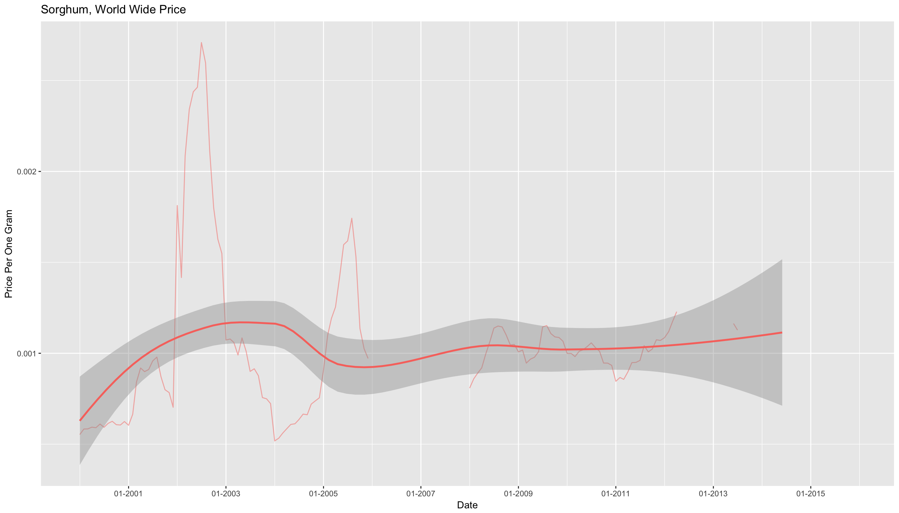
Very similar to maize we see a significant spike from 2002 to 2003 which was a drought in Southern Africa. Although sorghum can grow in dry climates, it is still vulnerable to droughts.
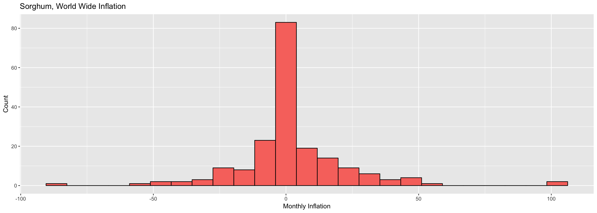
As far as the inflation of sorghum there is a less symmetric histogram meaning prices fluctuate often.
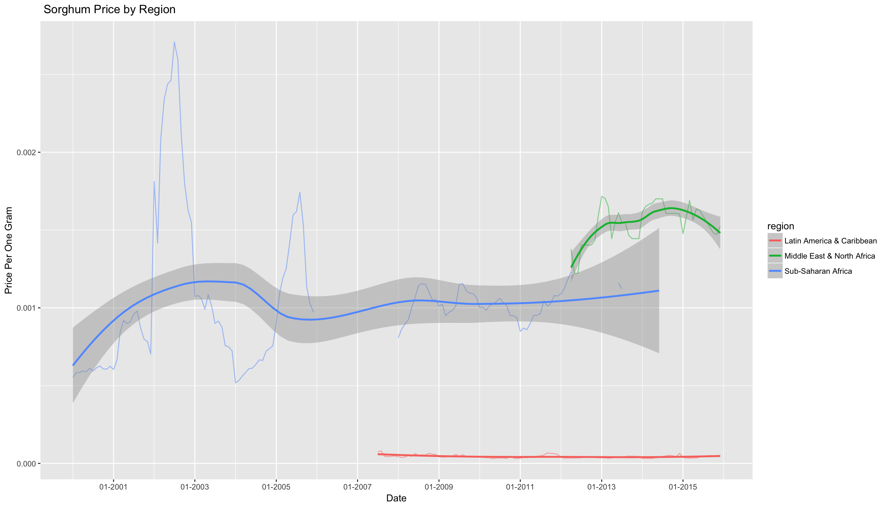
Once again a vast majority of the data is from Sub-Saharan Africa. Also the extremely low prices in Latin America & The Caribbean. Which is interesting because sorghum production is not very large in this region. Though for this data set the region is represented by one country, Honduras. Additionally, for the Middle East and North Africa, there is only data from one country, so the only true representation of a region is for Sub-Saharan Africa.
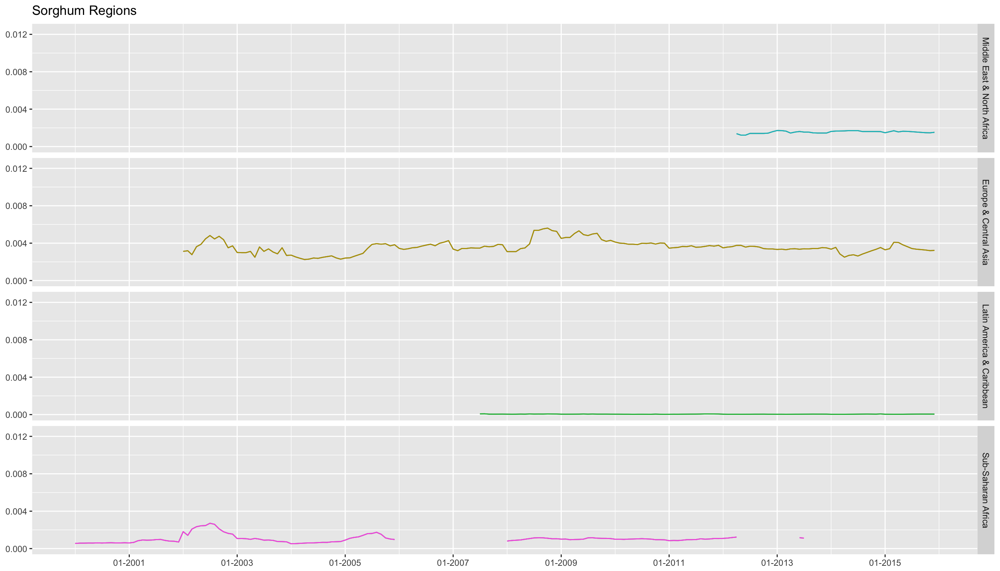
Since the only real representation of a region is Sub-Sahrran Africa this chart is accurate
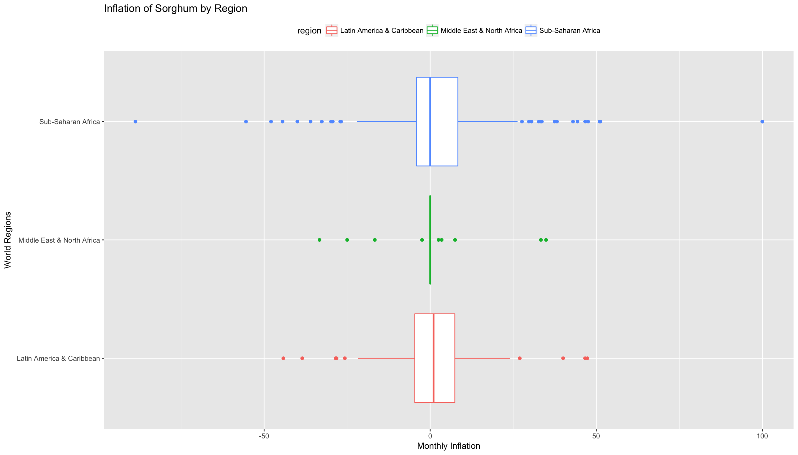
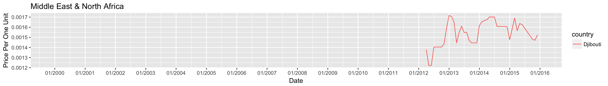 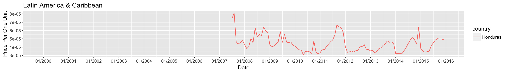 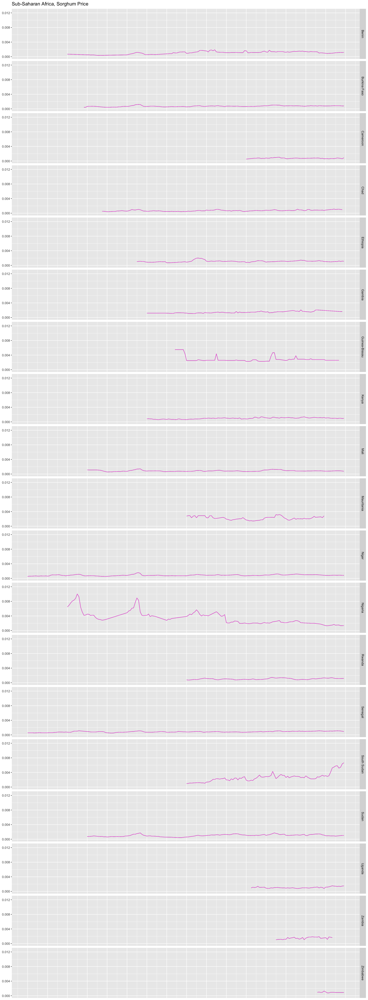
Once again the countries with the highest prices are South Sudan, Nigeria, and Guinea-Bissau.
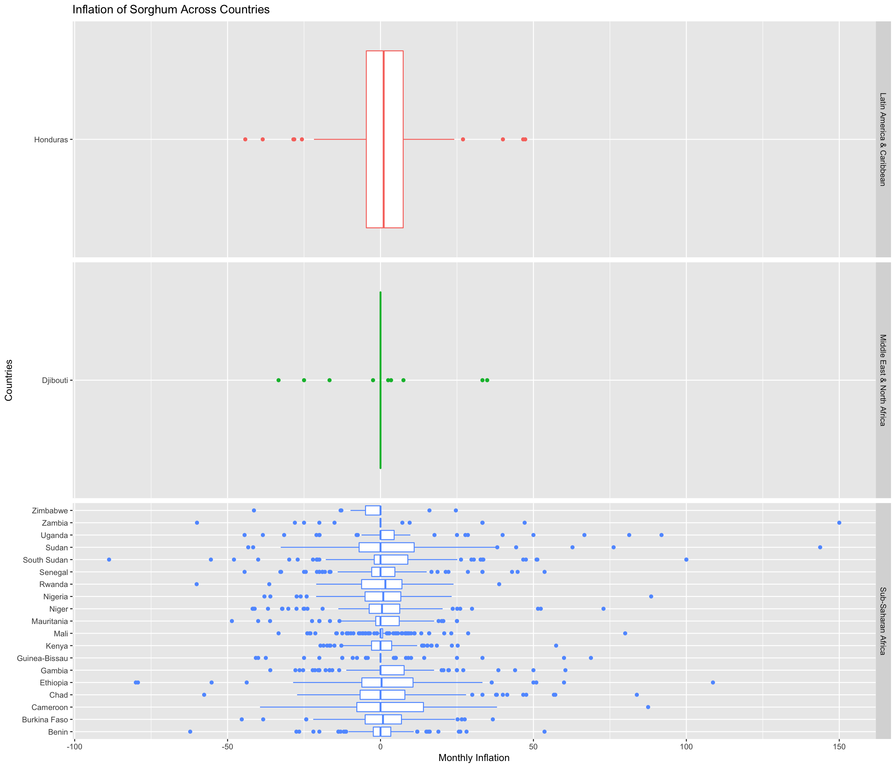
We see that Sudan, Ethiopia, and Cameroon have unstable inflation. For all three of these countries, it is likely that they were also affected by the drought in the South and similar famines like in South Sudan
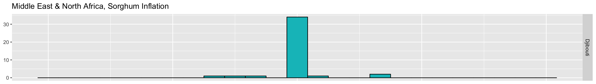 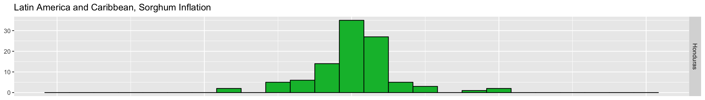 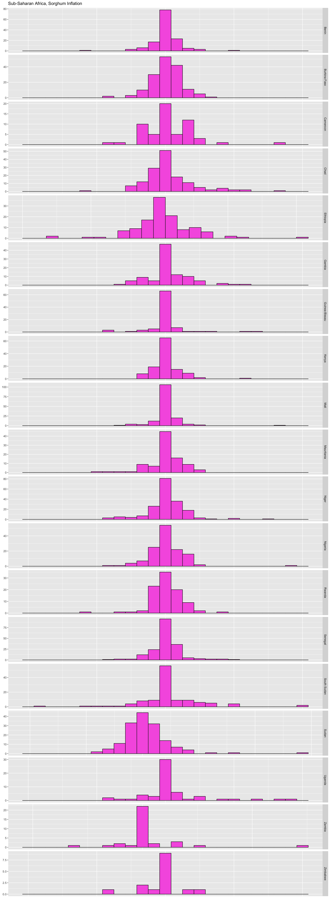
| country | avg_infla | stdev |
|---|---|---|
| Ethiopia | 8.0542238 | 210.68941 |
| Zambia | 5.1229069 | 33.51585 |
| South Sudan | 3.5139364 | 24.74917 |
| Somalia | 2.9654894 | 36.83750 |
| Uganda | 2.6634891 | 21.78674 |
| Chad | 2.2580033 | 21.85346 |
| Sudan | 1.8953566 | 16.80792 |
| Kenya | 1.7224924 | 18.64033 |
| Mauritania | 1.6761164 | 18.62365 |
| Gambia | 1.5494117 | 18.28253 |
| Cameroon | 1.4863805 | 17.10844 |
| Benin | 1.3609812 | 16.01797 |
| Burkina Faso | 1.0092126 | 22.46538 |
| Zimbabwe | 1.0064183 | 25.16375 |
| Rwanda | 0.9532453 | 13.80558 |
| Honduras | 0.9241482 | 14.27409 |
| Senegal | 0.8871079 | 14.48709 |
| Nigeria | 0.8756034 | 14.80185 |
| Niger | 0.8212911 | 12.79779 |
| Djibouti | 0.8161304 | 11.13692 |
| Mali | 0.5439806 | 10.44736 |
| Guinea-Bissau | 0.3246782 | 13.74623 |
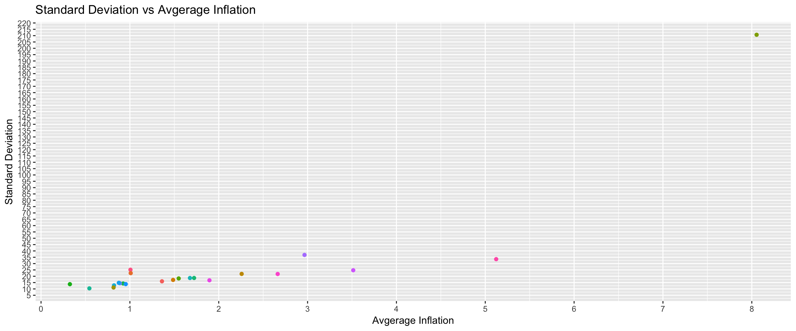